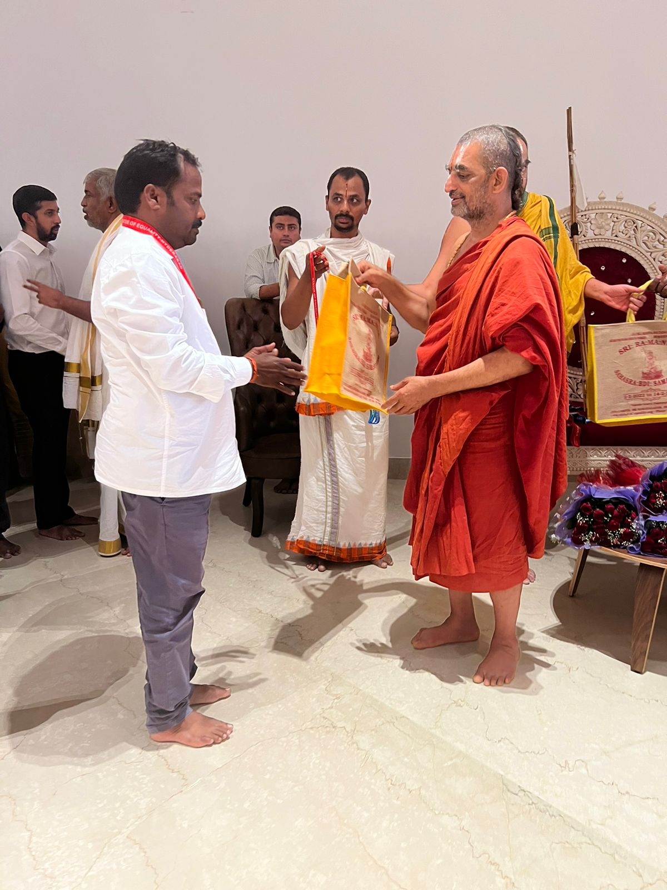
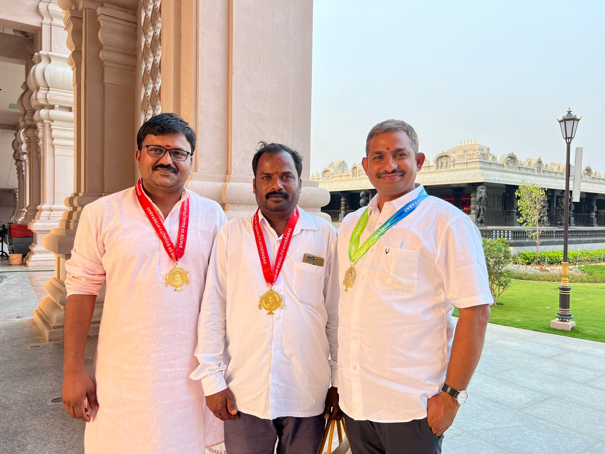

Major Temple Commission
Completed the Sri Ramanuja Sahasrabdi project in Hyderabad under HH Sri Tridandi Chinna Jeeyar Swamiji, delivering pure stone temple elements with exacting care.
Our work is recognized for quality, cultural sensitivity and excellence in execution across temple and architectural stone projects.
Professional recognitions that reflect our commitment to temple carving excellence, restoration accuracy and sacred craftsmanship.
Completed the Sri Ramanuja Sahasrabdi project in Hyderabad under HH Sri Tridandi Chinna Jeeyar Swamiji, delivering pure stone temple elements with exacting care.
Awarded a medal for completing the Sri Ramanuja Sahasrabdi commission, recognizing craftsmanship and dedication.
Find us on Google: Shree Venkateswara Shilpa Shala.
Images from the Sri Ramanuja Sahasrabdi medallion presentation and project recognition.

Medal awarded for the Sri Ramanuja Sahasrabdi temple carving project by HH Sri Tridandi Chinna Jeeyar Swamiji

Co-workers of Sri Ramanuja Sahasrabdi temple
Trusted by temple authorities, builders and architects who value our craftsmanship and reliability.
“The stone details were exceptionally precise, and the temple installation was managed with great care. Their craftsmanship elevated the entire project.”
“The restoration preserved the temple’s original spirit. The team delivered on time and exceeded our expectations.”
“Their stone façade work added a premium, authentic character to our project. They were professional at every stage.”